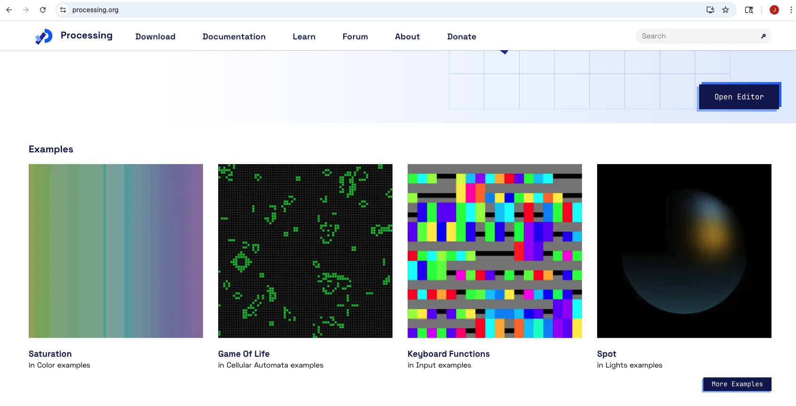

Lauren Lee McCarthy
Creator of p5.js • Professor, UCLA Design Media Arts
🌐 get-lauren.net
Education
MFA, Design Media Arts
University of California, Los Angeles (UCLA)
BS, Computer Science & Art and Design
Massachusetts Institute of Technology (MIT)
Current Position
Professor
Department of Design Media Arts, UCLA
Exploring the intersection of design, art, and technology through research, teaching, and creative practice.
Key Achievement
Creator & Lead Developer
p5.js JavaScript Library
Developed an open-source JavaScript library that democratizes creative coding, making it accessible to artists, designers, educators, and beginners worldwide.
Research Focus
Questions the values embedded in technology and advocates for more inclusive, human-centered approaches to digital tools. Explores themes of agency, control, and surveillance in performances and teaching, blurring the line between artist, user, and programmer.
Featured Project: LAUREN
One of Lauren Lee McCarthy's most notable projects, LAUREN, brings critical attention to contemporary issues of data usage and surveillance. In this work, McCarthy positions herself as a "human Alexa," installing a network of custom smart devices—cameras, microphones, locks, faucets, and appliances—in participants' homes and monitoring them 24/7. As described in the project statement: "LAUREN is a human Alexa, watching over you in your home and controlling it for you... Anything Alexa can do LAUREN can do better. LAUREN can understand you as a human and anticipate your needs and desires." By embodying the very systems she critiques, McCarthy exposes the uncomfortable tensions between intimacy and privacy, convenience and agency, and highlights the often-invisible human labor behind so-called "automated" technologies.
LAUREN is not just a commentary on smart home devices—it is a deeply personal performance that confronts users with the emotional and ethical dimensions of living under constant digital surveillance. It exemplifies McCarthy's larger practice of using design and performance art to ask difficult questions about who builds our technologies, whose needs they serve, and what kinds of futures they enable—or foreclose.
How does Lauren Lee McCarthy's background—both technical and critical—shape the design philosophy of p5.js?
Lauren Lee McCarthy's critical engagement with data, surveillance, and the social implications of technology is deeply woven into the foundational values of p5.js. Her recognition that data is not neutral but socially constructed—shaped by the conditions and values under which it is collected—challenges the dominant norms of tech culture. This perspective, rooted in her transition from technical training at MIT to critical design practice at UCLA, directly informed the creation of p5.js as a tool to counter exclusionary and corporate software paradigms. Rather than prioritizing speed or efficiency, p5.js emphasizes softness, accessibility, and community. McCarthy's performance projects like LAUREN, which confront issues of surveillance, control, and agency, mirror the questions embedded in p5.js: Who builds the tools we use? Whose values are encoded in them? Who is left out? Through this, McCarthy's practice does not just critique technology—it actively reimagines it, making p5.js both a software library and a political statement about inclusivity, equity, and the future of creative coding.
p5.js
p5.js was created in response to long-standing inequities in both the tech and art worlds. Its founder, Lauren Lee McCarthy, brings a unique perspective shaped by her technical background and critical reflection. Unlike traditional artists, McCarthy studied computer science at MIT, where she initially saw data as objective and indisputable. In a 2023 interview during her visit to Stanford's Institute for Human-Centered Artificial Intelligence, she recalled, "Early in my career, I thought of data as something more factual, or more unchanging, or indisputable... I have come to understand that data is something that is merely constructed in some way; you can't understand data as separate from the frame in which it was collected or analyzed or understood." This critical awareness of data as socially constructed became foundational to her work.
By 2024, McCarthy had begun to question not just data itself, but the deeper values embedded within the tools we use to process and represent it. She stated, "We have to question what values are being built into the software we use. A piece of technology is not neutral; it's built based on the biases, assumptions and priorities of the people that create it." She pointed out that many of these tools emerge from environments like Silicon Valley, shaped by predominantly white, male, and Western perspectives. This critique directly informed the development of p5.js, which prioritizes accessibility, inclusivity, and community—challenging traditional software paradigms. "We also need to question: how is this being made? And how much agency do we have to decide whether and how we want to use it?" In her performances and teaching, McCarthy often explores themes of agency, control, and surveillance, further blurring the line between artist, user, and programmer.
- Lack of Representation: Lauren Lee McCarthy saw that women, people of color, and people with disabilities were consistently underrepresented in creative coding spaces. Unlike tools that treat diversity as an afterthought, p5.js was built from the ground up with equity in mind.
- Dominance of Corporate Tech Culture: Most software is shaped by western, male, Silicon Valley engineers. McCarthy challenged the idea that tools should be optimized only for speed or efficiency—instead prioritizing care, softness, and accessibility.
- Response to Processing: While p5.js grew from the Processing project (also meant for visual code-based experimentation), p5.js made a decisive leap into web-based, inclusive, and explicitly political toolmaking.
- Educational Context: The library was released in a moment where STEM-to-STEAM (adding art to science/tech/math) education was gaining momentum. p5.js became an important bridge, especially in K–12 and university classrooms around the world.
- Community-first Philosophy: In contrast to capitalist narratives of "innovation," p5.js centers slow growth, translation efforts, consent-based participation, and open collaboration.
p5.js was a tool reshaping what creative freedom and inclusivity could look like in code.
Foundation of Processing to p5.js
The roots of p5.js trace back to the early 2000s with the creation of Processing, a Java-based visual programming language founded in 2001 by Casey Reas and Ben Fry. Developed at the MIT Media Lab under the guidance of John Maeda, Processing was intended to make coding accessible to artists, designers, and creatives by simplifying the syntax and focusing on visual output. It emerged at a time when programming was largely seen as a technical or scientific skill, rather than a creative medium.
Processing played a major role in opening up code-based art and design practices. Its core goal was to bridge programming and visual expression, providing an environment where experimentation, play, and creativity were prioritized over efficiency or optimization. This positioned Processing as a vital tool in the emerging STEAM movement (Science, Technology, Engineering, Art, and Math), especially in educational settings.
However, by the early 2010s, limitations of Processing—such as its reliance on Java and desktop-only use—prompted a need for a more accessible, web-based alternative. This is where p5.js enters the timeline. Initiated around 2013 and led by Lauren Lee McCarthy, p5.js was envisioned as a JavaScript reinterpretation of Processing, designed for the web and built with explicit values of inclusivity, accessibility, and community engagement.
